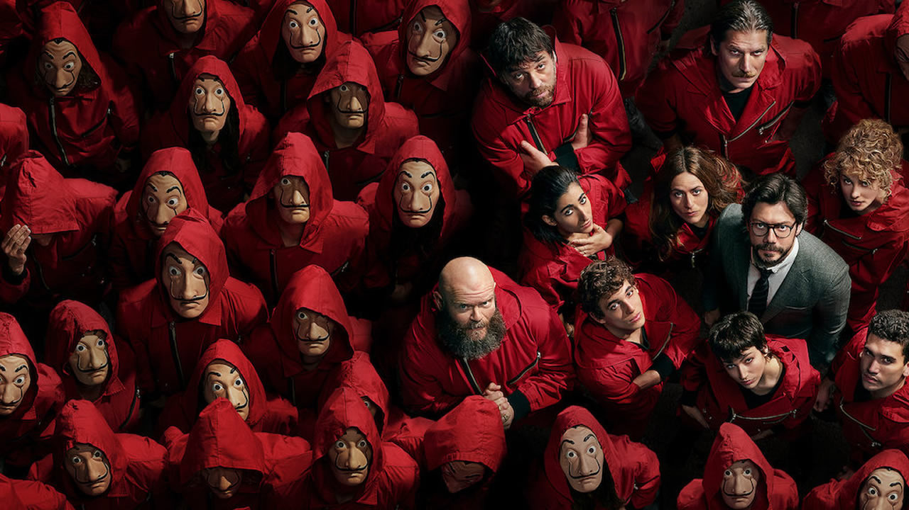

Un golpe sin precedentes

La Casa de Papel es una serie española de thriller y crimen que sigue a El Profesor, un genio criminal que recluta a ocho ladrones —todos con nombres de ciudades— para llevar a cabo el atraco más audaz de la historia: entrar en la Fábrica Nacional de Moneda y Timbre y escapar con 2.400 millones de euros impresos en sus propias máquinas.
Con rehenes dentro del edificio, el grupo viste monos rojos y máscaras del pintor surrealista Salvador Dalí. Lo que comenzó como un crimen se transformó en un símbolo: la banda fue adoptada por movimientos sociales en todo el mundo como ícono de resistencia contra el sistema.
Producida por Vancouver Media y emitida inicialmente por Antena 3 en 2017, la serie fue adquirida por Netflix ese mismo año. En pocos meses se convirtió en la producción en español más vista de la historia de la plataforma, con audiencias en más de 190 países.
Banda sonora
Bella Ciao
El himno de la banda, tal como suena en la serie. Dale play y dejalo sonando de fondo mientras recorrés el sitio.